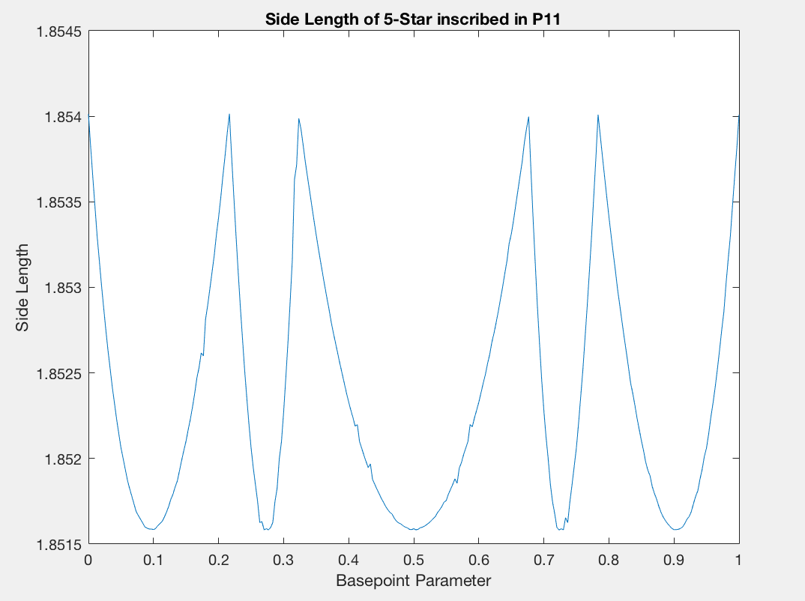
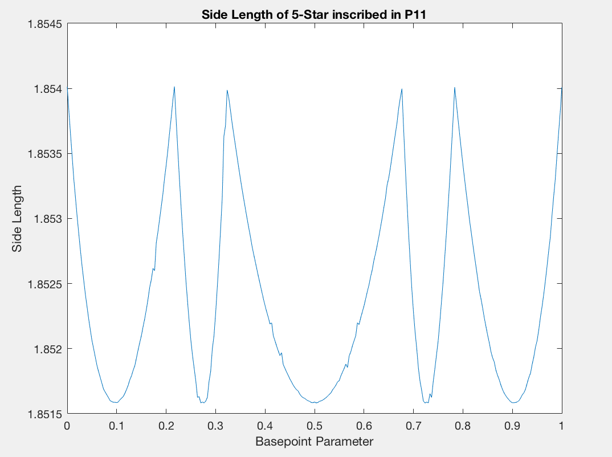

Back to Adam's site

In the case of the regulr polygons, we are able to leverage the cyclic graph machinery to determine the homotopy types of \(VR(P_n;r)\) almost completely. Some preliminary results towards this direction are the following:
Lemma. There exist scales \(\{r_n\}_{n=3}^\infty\) such that \(VR(P_n;r)\) is a cyclic graph for all scales \(0 \le r < r_n\). Moreover, we have an explicit formula for these scales.
This in mind, we note that the winding fraction of \(VR(P_n;r)\) depends heavily on the existence of stars.
Definition. A \((2\ell+1)\)- pointed star inscribed in \(VR(P_n;r)\) is an \(f\)-periodic orbit of size \(2\ell+1\) which "winds" \(\ell\) times around its center.
Definition. Let \(s_{n,\ell}\) and \(t_{n,\ell}\) be the smallest and largest scale parameters \(r \ge 0\) for which a \((2\ell+1)\)-pointed star can be inscribed in \(VR(P_n;r)\)
Note that the winding fraction of \(VR(P_n;r)\) is equal to \(\ell/(2\ell+1)\) whenever \(r \in (s_{n,\ell},t_{n,\ell})\) In this case, the homotopy type is a wedge sum of \(2\ell\)-dimensional spheres, the number of which depends on the number of stars that can be inscribed into \(VR(P_n;r)\). For \(r \notin [s_{n,\ell},t_{n,\ell}]\), the homotopy type is simply an odd sphere. Hence, we turn to the question of counting these stars.
Lemma. For any basepoint \(v \in P_n\), there exists a unique scale \(r \ge 0\) such that a unique \((2\ell+1)\)-pointed star containing \(v\) can be inscribed in \(VR(P_n;r)\), if and only if \(n \ge 4\ell+2\).
Lemma. For \(\ell \ge 1\) and \(n \ge 4\ell+2\), the function \(s_{2\ell+1}: P_n \to R\), assigning to each point \(v \in P_n\) the scale \(r \ge 0\) above (the side length of the unique star containing \(v\)), is continuous.
To get a sense of how many inscribed stars exist, we created a collection of MATLAB simulations that can trace the side length function. The source code can be accessed from the following link:
MATLAB Source CodeThese simulations can illustrate some of the interesting behavior and phenomena that these inscribed stars exhibit, in a variety of cases. In what follows, we include a few animated examples of inscribing a star (blue) into a regular polygon (black) parameterized by a moving basepoint (red).
In this case, every inscribed star is both equilateral and equiangular. That is, the inscribed star for every basepoint is similar to every other. Here we also get very simply explicit formulas for the locations of vertices of each star, which allows us to compute the side length function explicitly. We find that this side length function takes on a simple (almost) parabolic shape.
In this case where n is one away from a multiple of 2l+1, we can observe some interesting phenomena. The inscribed stars are no longer necessarily equiangular, and the resulting side length plot takes on a piecewise parabolic shape. Also, the animations show that the inscribed stars have an odd tendency "breathing" while the move.
.gif) 
